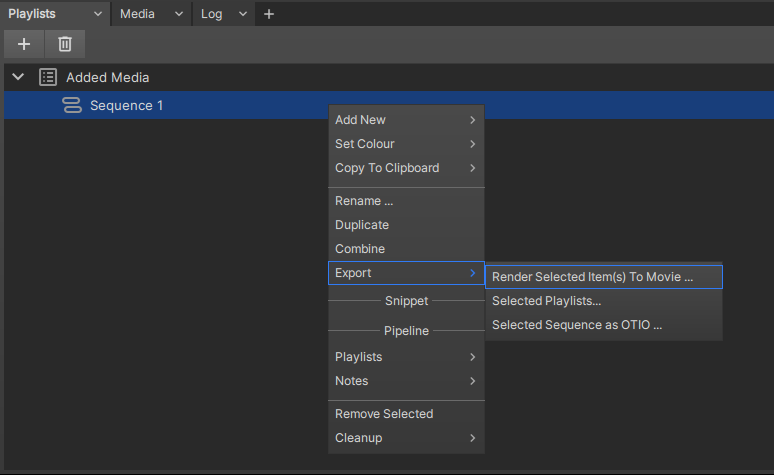
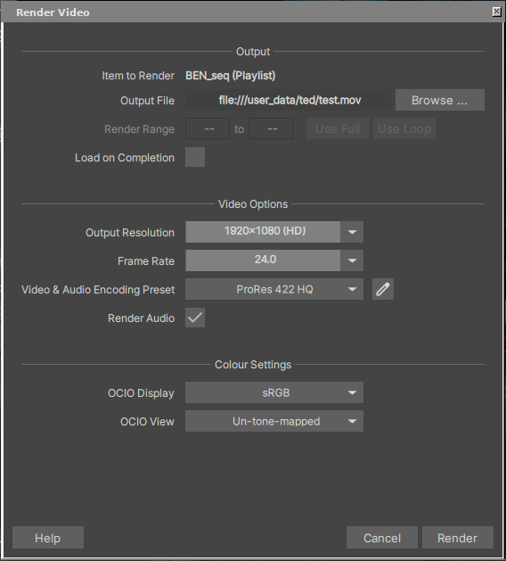
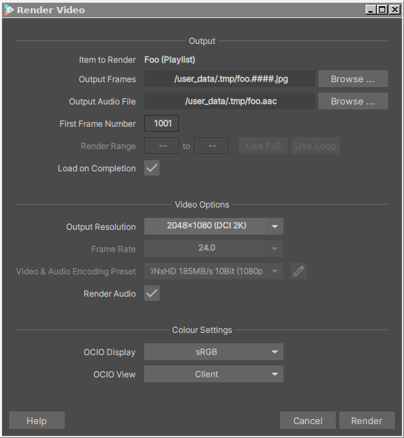
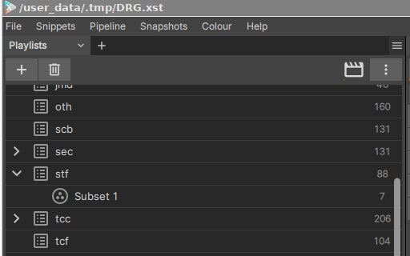
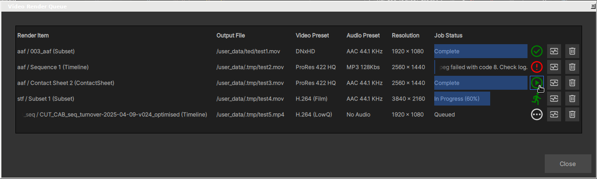
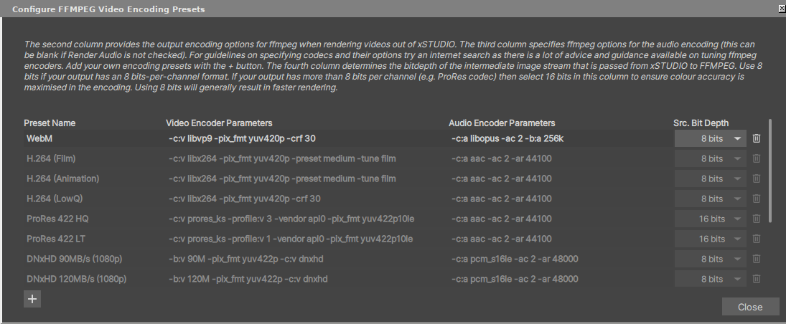

Video Output (Rendering)
xSTUDIOでは、広く普及しているFFMpegアプリケーションを通じて利用可能なさまざまなビデオおよびオーディオコーデックを使用して、Playlists、Subsets、Contact Sheets、Timelinesをコンテナ化されたメディアファイル(mp4、mov、mkv、webmなど)にレンダリングできます。レンダリングする項目をPlaylistsペインで1つ以上選択し、右クリックしてコンテキストメニューを表示するか(またはメインのFileメニューを経由して)、「Export->Render Selected Item(s) to Movie …」を選択します。
{kind=link}

Use the context menu or File menu to launch the render wizard.
これにより、出力ビデオのフォーマットを指定できる Render Video ダイアログが表示されます。
{kind=link}

The Render Video allows you to fully specify your output video.
What gets Rendered
何がレンダリングされるかは、以下のシンプルなルールに従って、選択した項目のタイプによって決まります：
PlaylistsおよびSubsets： PlaylistまたはSubset内のすべてのMedia項目は、PlaylistまたはSubset内での並び順を反映したリニアなシーケンスとして1つに「ストリング(連結)」されます。したがって、Playlist内に10個のビデオファイルがある場合、出力レンダリングでは10個の各クリップが順番に表示され、各ビデオファイル内のすべてのフレームが使用されます。
Contact Sheets： Contact Sheetは、xSTUDIOのUIに表示されているとおりに、同じレイアウト(Gridモードなど)かつソースとなるContact Sheetの対応するプレイヘッドと同じデュレーションで正確にレンダリングされます。
Sequences(Timelines)： Sequenceは、xSTUDIOセッションに表示されているとおりに正確にレンダリングされるため、トラックの非表示/表示、クリップの非表示/表示、およびCompare Modeも同様に尊重されます。したがって、例えば、レンダリング対象のSequenceを選択する前にCompare Modeを「Grid」に設定することで、4つのビデオトラックを2x2の配置でレンダリングすることができます。
Note
アノテーションやHUD項目(メディアメタデータのオーバーレイなど)のようなオーバーレイグラフィックスは、main interfaceで有効になっている限り、レンダリングに含まれます。重要： レンダリングの進行中にxSTUDIOのmain interfaceでHUDをオフにすると、HUDがオフにされた時点でレンダラーが処理していた箇所から、レンダリング結果からもHUDが消失します。そのため、レンダリングの進行中はHUDの設定を変更しないでください！
Render Output Settings
{kind=link}

Render Videoダイアログでは、.movや.mp4などのコンテナ化されたメディアエンコーディングではなく、
イメージシーケンス(連番)にレンダリングする場合、わずかに異なるオプションが表示されます。
Executing, Monitoring and Checking a Render
出力用のファイルシステムパスを指定すると、「Render」ボタンがクリック可能になり、ジョブをレンダーキューに送ることができます。一度に複数のレンダリングをキューに入れることも可能です。Playlistパネルで複数の項目を選択している場合、「Render」ボタンを押すと次の項目のためにRenderダイアログがリフレッシュされます。「Skip」ボタンを使用すると、現在のPlaylist項目をスキップして、選択されている次の項目のレンダリング設定に進むことができます。
Note
xSTUDIOの出力レンダリング機能は、完全にバックグラウンドで動作します。そのため、レンダリングの進行中もxSTUDIOのインターフェースをそのまま使用し続けることができます。十分なRAM、最新のGPU、およびハイスペックなCPUを搭載したシステムであれば、レンダリング中もxSTUDIOのパフォーマンスに目立った影響は出ない場合もあります。そのままMediaの再生やレビューを続けることが可能です。
Note
レンダリングがキューに入れられると、対象のPlaylist、Subset、Contact Sheet、またはSequenceの完全かつ正確なコピーが内部で作成されます。そのため、キューに入れた後にPlaylistなどに変更を加えたり、セッションから削除したりした場合でも、レンダリングに影響はありません。
「Render」ボタンを押すと、Playlistsパネルの右上に次のようなレンダリングステータスボタンが表示されます。
{kind=link}

ムービーボタンのハイライトがアニメーションしている場合は、xSTUDIOがレンダリング中であることを示しています。
このボタンをクリックすると、レンダーキューを表示できます。xSTUDIOは一度に1つの出力をレンダリングします。キューに送られた順に処理が実行されます。
{kind=link}

レンダーキューのインターフェースです。Playlistsパネルの右上に表示されるムービーボタンをクリックするとアクセスできます。
ジョブが完了すると、緑色のチェックマークアイコンにマウスを合わせることで「再生」ボタンが表示されます。これをクリックすると、Quick Viewウィンドウが開き、レンダリングされた出力をすぐに確認できます。失敗したレンダリングは、赤色の警告アイコンで表示されます。モニターのハートビート(心拍)アイコンのボタンをクリックすると、レンダリング中および完了後の両方でFFmpegの完全なログを確認できます。これはレンダリングが失敗した際に非常に役立ちます。レンダリングは、開始前または進行中であってもゴミ箱ボタンでキャンセルできます。また、ゴミ箱ボタンは正常に完了したレンダリングをキューから消去する際にも使用します。
Output Video and Audio Codec Settings
How the Renderer Works
コーデックの詳細に入る前に、xSTUDIOのレンダラーがどのように動作するかを知ることは有用です。レンダリング中、xSTUDIOはオフスクリーンのViewportを使用して画像フレームを生成します。その画像データは「パイプ」と呼ばれる仮想ファイルに書き込まれます。この処理はバックグラウンドプロセスで行われるため、xSTUDIOのインターフェースがフリーズすることはありません。また、xSTUDIOはバックグラウンドで、有名なメディアエンコード/デコードアプリケーションであるFFmpegのインスタンスを起動します。このFFmpegプロセスは、パイプを介してxSTUDIOから画像(およびオーディオサンプル)を受け取るように設定されています。ユーザーにとって重要なのは、起動時にFFmpegに渡されるパラメータを、FFmpegのコマンドラインインターフェースを介してユーザー自身が設定できる点です。そのため、出力ファイルの作成に使用されるビデオおよびオーディオのコーデック、ならびにそのチューニングパラメータを完全に自由に設定できます。ターミナルでFFmpegを実行する場合とまったく同じように、エンコードパラメータを指定するだけです。
Configuring Encoding Presets
Render Videoダイアログには、ビデオおよびオーディオコーデックのプリセットのドロップダウンリストがあります。その隣にはペンアイコンがあります。これをクリックすると、ビデオコーデックのプリセットパネルにアクセスできます。
{kind=link}

The FFMpeg encode presets panel.
このパネルでは、ビデオおよびオーディオエンコーディングの正確なFFmpeg出力パラメータを指定できます。既存のプリセット(読み取り専用のためリスト内ではグレーアウトされています)は、独自の新しいプリセットを追加する際の有用なリファレンスになります。FFmpegには、ビデオエンコーディングを微調整するための無数のコーデックオプションや特殊フィルターが存在しますが、ここではそのドキュメントは提供していません。幸いなことに、特定の出力を得るためのFFmpegの使用方法や最適化に関するQ&Aがウェブ上に数多く存在するため、必要な設定を見つけるのは難しくありません。オーディオのエンコーディングオプションは別の列で指定し、同様の原則が適用されます。多くのエンコーディング設定が可能であり、ビデオを正常に生成するためにはこれらを正しく設定することが不可欠です。なお、メインのビデオレンダーダイアログで「Render Audio」ボックスのチェックを外してオーディオをレンダリングしない場合は、オーディオエンコードオプションを空欄のままにしておくことができます。
また、ビット深度のドロップダウン設定もあります。これは、xSTUDIOがFFmpegにパイプで送るRGB画像のカラー解像度を設定するものです。16ビットはより正確であり、10ビットや12ビットのビット深度を持つProResなどのビデオフォーマットを出力する場合に必要です。出力のチャンネルあたりが8ビットのみである他の多くのフォーマットでは、ソース画像に8ビットを選択することで、品質に影響を与えることなくレンダリング時間を大幅に短縮できます。
Note
ビデオエンコードのプリセットでは、出力ピクセルフォーマット(-pix_fmtオプション)を明示的に指定する必要があります。指定しない場合、FFmpegは入力ピクセルフォーマット(rgba)をそのまま引き渡そうとします。しかし、これはほとんどのビデオエンコーダーと互換性がないためです。
Troubleshooting
新しいエンコードプリセットを追加した際にレンダリングが失敗した場合は、設定のデバッグが必要です。レンダーキューのインターフェースから、ハートビートモニターボタンを介して失敗したレンダリングのFFmpeg出力ログにアクセスできます。FFmpegのログを非常に注意深く確認してください。エラー箇所を見つけるのが難しい場合もありますが、エラーの原因を確認できるはずです。原因を特定したら、レンダリングが成功するまでプリセットに戻って微調整を行ってください。